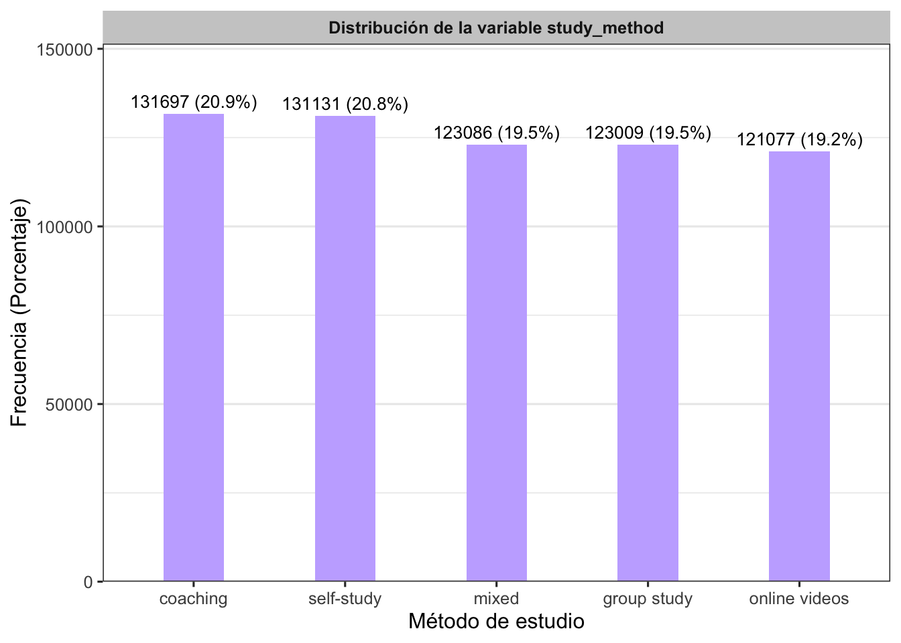
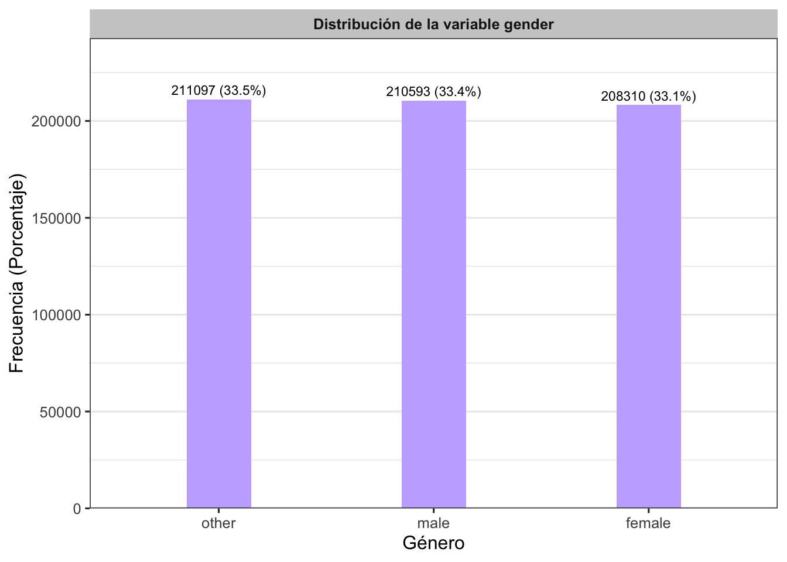
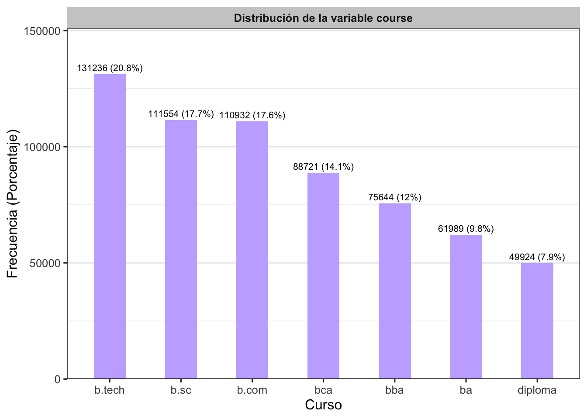
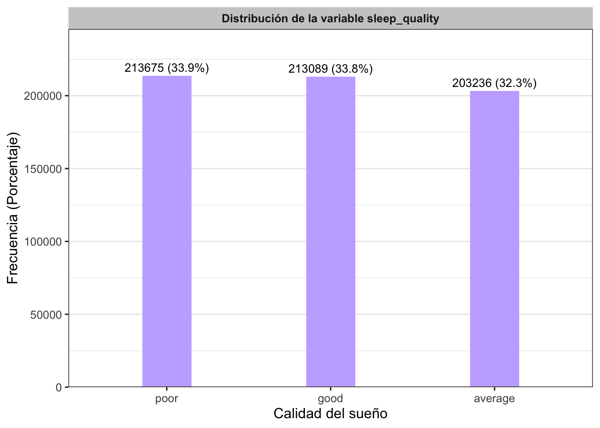
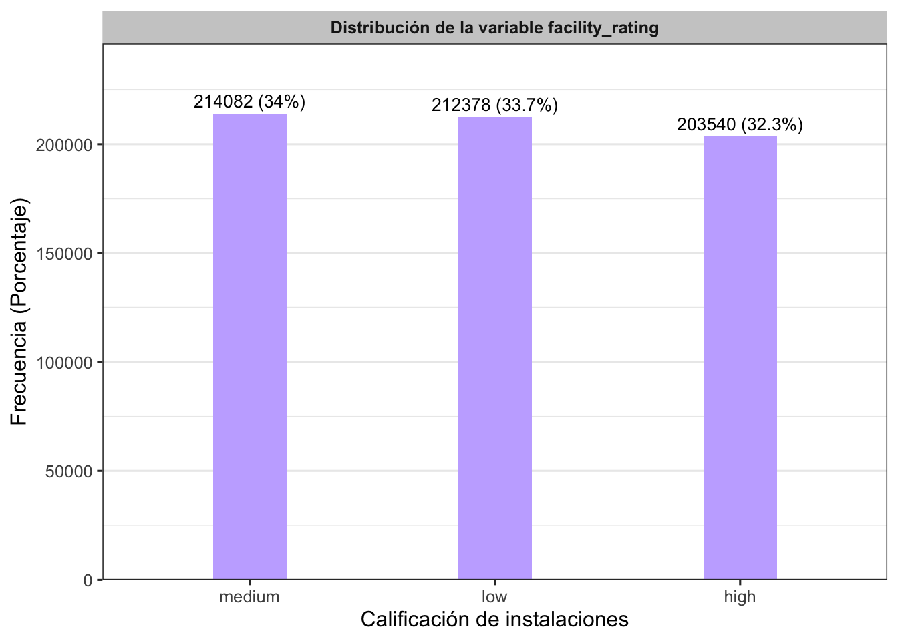
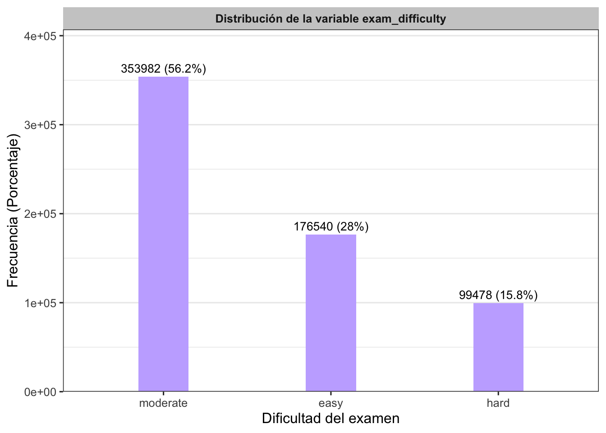
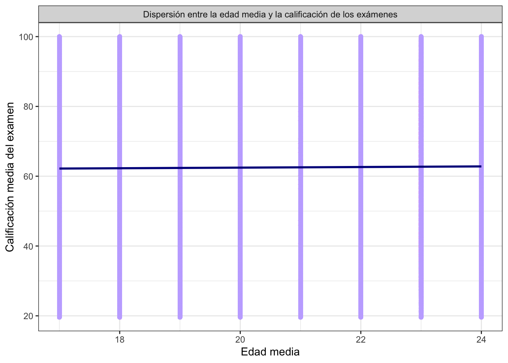
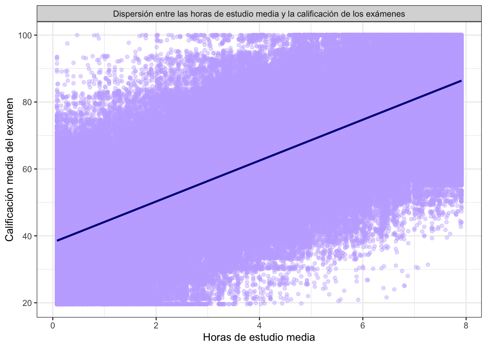
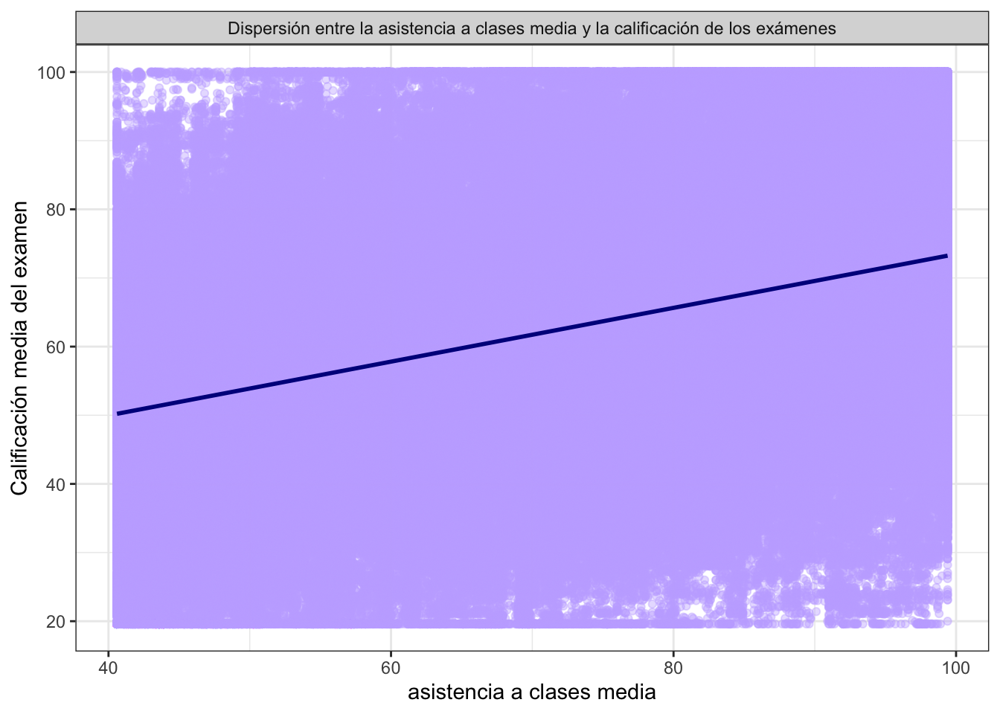
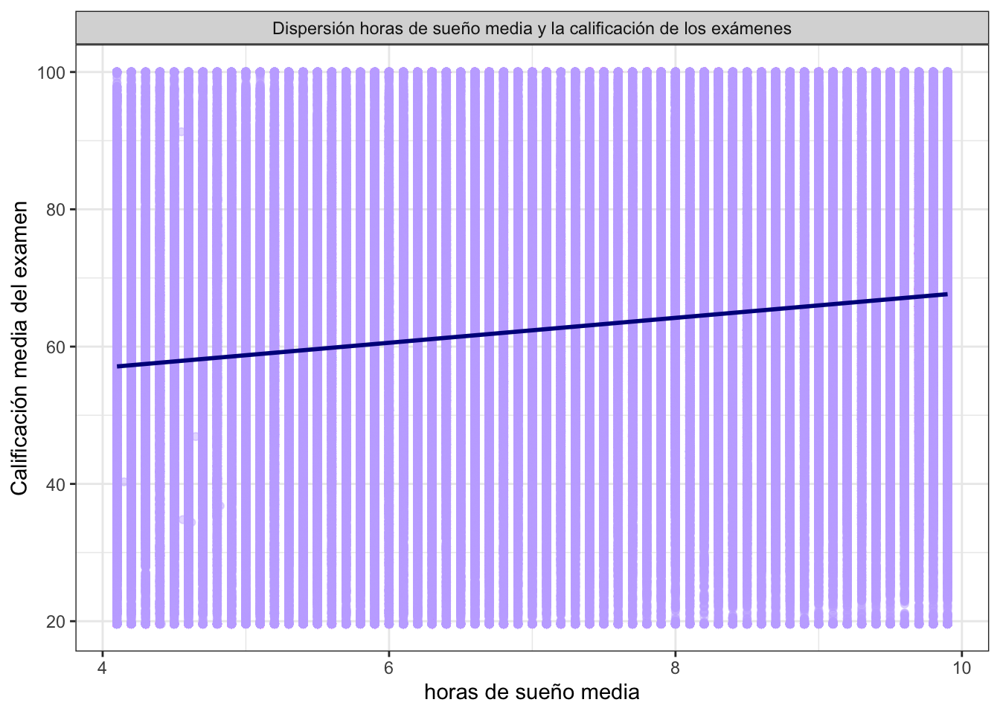

2 Análisis exploratorio de datos (EDA)
2.1 Análisis exploratorio de exam_score (Target)
trainset %>% summarise(n = length(exam_score),
media = mean(exam_score),
sd = sd(exam_score),
mediana = median(exam_score),
RIC = IQR(exam_score),
Q1 = quantile(exam_score,0.25),
Q3 = quantile(exam_score,0.75),
minimo = min(exam_score),
maximo = max(exam_score),
asi = skewness(exam_score),
)## n media sd mediana RIC Q1 Q3 minimo maximo asi
## 1 630000 62.50667 18.91688 62.6 27.5 48.8 76.3 19.599 100 -0.04827309La variable exam_score fue analizada a partir de 630.000 estudiantes, donde cada fila representa un estudiante individual. El puntaje promedio es de 62,51 puntos, con una desviación estándar de 18,92 puntos, lo que refleja una dispersión moderada en el desempeño de los estudiantes.
El 50% de los estudiantes obtiene un puntaje menor o igual a 62,60 puntos, un valor prácticamente idéntico a la media, y el RIC de 27,5 puntos (entre el primer cuartil de 48,80 y el tercer cuartil de 76,30) muestra que el 50% central de los estudiantes se concentra en una franja relativamente estrecha. Esta cercanía entre la media y el 50% ya anticipa una distribución simétrica, confirmada por el coeficiente de asimetría de -0,05, casi nulo.
En los extremos, el estudiante con peor desempeño obtuvo 19,60 puntos, mientras que al menos uno alcanzó el máximo posible de 100. Esto es consistente con lo observado en el histograma, donde los puntajes se distribuyen de forma bastante uniforme alrededor del centro, sin un pico muy pronunciado ni colas extendidas.
- Histograma de densidad de la variable:
trainset %>%
ggplot(aes(x = exam_score))+
geom_histogram(aes(y = after_stat(density)),
binwidth = 5,
fill = "#c5b0ff",
color = "white",
alpha = 0.6)+
geom_density(color = "darkblue", linewidth = 1.2) +
coord_cartesian(xlim = c(0, 100), expand = FALSE) +
labs(title = 'Distribución de la nota media del examen',
x = 'Nota media del examen',
y = 'Densidad')+
theme_bw()
Es posible apreciar que la moda se concentra entre 50 y 75 puntos de score.
- Boxplot
trainset %>%
ggplot(aes(x = "", y= exam_score))+
geom_boxplot(fill = "#c5b0ff", color = "darkblue",
outlier.color = '#2f0be0')+
stat_summary(fun = mean, geom = 'point', shape = 20,
size = 3, color = 'black') +
theme_bw()
El boxplot confirma lo visto en el histograma: la caja es simétrica, con la mediana (62,6) prácticamente centrada entre Q1 (48,8) y Q3 (76,3). Los bigotes no muestran valores atípicos.
2.2 Análisis de las variables independientes (características)
- Inicialmente, analizaremos las variables númericas.
resumen_numericas <- trainset %>%
select(where(is.numeric), -exam_score) %>%
pivot_longer(
cols = everything(),
names_to = "variable",
values_to = "valor"
) %>%
group_by(variable) %>%
summarise(
n = sum(!is.na(valor)),
media = round(mean(valor, na.rm = TRUE),3),
ds = round(sd(valor, na.rm = TRUE),3),
mediana = median(valor, na.rm = TRUE),
minimo = min(valor, na.rm = TRUE),
maximo = max(valor, na.rm = TRUE),
Q1 = quantile(valor, 0.25, na.rm = TRUE),
Q3 = quantile(valor, 0.75, na.rm = TRUE),
IQR = IQR(valor, na.rm = TRUE),
.groups = "drop"
)
resumen_numericas## # A tibble: 5 × 10
## variable n media ds mediana minimo maximo Q1 Q3 IQR
## <chr> <int> <dbl> <dbl> <dbl> <dbl> <dbl> <dbl> <dbl> <dbl>
## 1 age 630000 2.05e1 2.26e0 2.1 e1 17 2.4 e1 1.9 e1 2.3 e1 4 e0
## 2 class_attenda… 630000 7.20e1 1.74e1 7.26e1 40.6 9.94e1 5.7 e1 8.72e1 3.02e1
## 3 id 630000 3.15e5 1.82e5 3.15e5 0 6.30e5 1.57e5 4.72e5 3.15e5
## 4 sleep_hours 630000 7.07e0 1.74e0 7.1 e0 4.1 9.9 e0 5.6 e0 8.6 e0 3 e0
## 5 study_hours 630000 4.00e0 2.36e0 4 e0 0.08 7.91e0 1.97e0 6.05e0 4.08e0library(patchwork)
# Boxplot de age
p1 <- trainset %>%
ggplot(aes(x = "", y = age)) +
geom_boxplot(alpha = 0.7) +
labs(title = "Edad de los estudiantes", y = "Edad", x = "") +
theme_bw() +
theme(plot.title = element_text(size = 10, face = "bold"))
# Boxplot de study_hours
p2 <- trainset %>%
ggplot(aes(x = "", y = study_hours)) +
geom_boxplot(alpha = 0.7) +
labs(title = "Horas de estudio", y = "Horas", x = "") +
theme_bw() +
theme(plot.title = element_text(size = 10, face = "bold"))
# Boxplot de class_attendance
p3 <- trainset %>%
ggplot(aes(x = "", y = class_attendance)) +
geom_boxplot(alpha = 0.7) +
labs(title = "Porcentaje de asistencia", y = "%", x = "") +
theme_bw() +
theme(plot.title = element_text(size = 10, face = "bold"))
# Boxplot de sleep_hours
p4 <- trainset %>%
ggplot(aes(x = "", y = sleep_hours)) +
geom_boxplot(alpha = 0.7) +
labs(title = "Horas de sueño", y = "Horas", x = "") +
theme_bw() +
theme(plot.title = element_text(size = 10, face = "bold"))
# Cuadrícula 2x2
(p1 + p2) / (p3 + p4)
Los boxplots muestran que las cuatro variables numéricas independientes tienen distribuciones bastante simétricas, sin valores atípicos notorios.
age: la mayoría de los estudiantes tiene entre 19 y 23 años; el 50% tiene una edad menor o igual a 21 años.study_hours: las horas de estudio varían bastante entre estudiantes, desde casi 0 hasta cerca de 8 horas; el 50% dedica 4 horas o menos al estudio.class_attendance: la asistencia se concentra entre 57% y 87%; el 50% de los estudiantes tiene una asistencia menor o igual a 72,6%.sleep_hours: la mayoría de los estudiantes duerme entre 5,6 y 8,6 horas; el 50% duerme 7,1 horas o menos, un rango bastante saludable.
En general, ninguna de las cuatro variables muestra sesgos fuertes ni valores extremos que llamen la atención, lo cual es consistente con lo observado en las tablas resume
- A continuación, trabajaremos en los gráficos de las variables categoricas.
tabla_study_method <- trainset %>%
count(study_method, name = "Frecuencia") %>%
mutate(
Porcentaje = round(Frecuencia / sum(Frecuencia) * 100, 2),
Variable = "study_method",
Categoria = as.character(study_method)
) %>%
select(Variable, Categoria, Frecuencia, Porcentaje)
tabla_study_method## Variable Categoria Frecuencia Porcentaje
## 1 study_method coaching 131697 20.90
## 2 study_method group study 123009 19.53
## 3 study_method mixed 123086 19.54
## 4 study_method online videos 121077 19.22
## 5 study_method self-study 131131 20.81tabla_study_method <- trainset %>%
count(study_method, name = "Frecuencia") %>%
mutate(
Porcentaje = round(Frecuencia / sum(Frecuencia) * 100, 1),
Etiqueta = paste0(Frecuencia, " (", Porcentaje, "%)")
)
ggplot(tabla_study_method, aes(x = reorder(study_method, -Frecuencia), y = Frecuencia)) +
geom_col(fill = "#c5b0ff", width = 0.4) +
geom_text(aes(label = Etiqueta), vjust = -0.5, size = 3.5) +
facet_wrap(~ "Distribución de la variable study_method") +
scale_y_continuous(expand = expansion(mult = c(0, 0.15))) +
labs(x = "Método de estudio", y = "Frecuencia (Porcentaje)") +
theme_bw(base_size = 12) +
theme(
plot.title = element_blank(),
strip.background = element_rect(fill = "gray80", color = NA),
strip.text = element_text(face = "bold"),
panel.grid.major.x = element_blank()
)
Las cinco categorías de study_method están bastante equilibradas entre sí: coaching (20,90%) y self-study (20,81%) son las más frecuentes, seguidas de cerca por mixed (19,54%), group study (19,53%) y online videos (19,22%). A diferencia de otras variables del dataset, aquí no se observa ninguna categoría dominante ni ninguna subrepresentada, lo que sugiere una distribución prácticamente uniforme de los métodos de estudio entre los estudiantes.
tabla_gender <- trainset %>%
count(gender, name = "Frecuencia") %>%
mutate(
Porcentaje = round(Frecuencia / sum(Frecuencia) * 100, 2),
Variable = "gender",
Categoria = as.character(gender)
) %>%
select(Variable, Categoria, Frecuencia, Porcentaje)
tabla_gender## Variable Categoria Frecuencia Porcentaje
## 1 gender female 208310 33.07
## 2 gender male 210593 33.43
## 3 gender other 211097 33.51tabla_gender <- trainset %>%
count(gender, name = "Frecuencia") %>%
mutate(
Porcentaje = round(Frecuencia / sum(Frecuencia) * 100, 1),
Etiqueta = paste0(Frecuencia, " (", Porcentaje, "%)")
)
ggplot(tabla_gender, aes(x = reorder(gender, -Frecuencia), y = Frecuencia)) +
geom_col(fill = "#c5b0ff", width = 0.3) +
geom_text(aes(label = Etiqueta), vjust = -0.5, size = 3) +
facet_wrap(~ "Distribución de la variable gender") +
scale_y_continuous(expand = expansion(mult = c(0, 0.15))) +
labs(x = "Género", y = "Frecuencia (Porcentaje)") +
theme_bw(base_size = 12) +
theme(
plot.title = element_blank(),
strip.background = element_rect(fill = "gray80", color = NA),
strip.text = element_text(face = "bold"),
panel.grid.major.x = element_blank()
)
La variable gender presenta una distribución muy pareja entre sus tres categorías: other (33,51%), male (33,43%) y female (33,07%), con diferencias de apenas 0,4 puntos porcentuales entre ellas. No se observa ningún desbalance relevante.
tabla_internet_access <- trainset %>%
count(internet_access, name = "Frecuencia") %>%
mutate(
Porcentaje = round(Frecuencia / sum(Frecuencia) * 100, 2),
Variable = "internet_access",
Categoria = as.character(internet_access)
) %>%
select(Variable, Categoria, Frecuencia, Porcentaje)
tabla_internet_access## Variable Categoria Frecuencia Porcentaje
## 1 internet_access no 50577 8.03
## 2 internet_access yes 579423 91.97tabla_internet_access <- trainset %>%
count(internet_access, name = "Frecuencia") %>%
mutate(
Porcentaje = round(Frecuencia / sum(Frecuencia) * 100, 1),
Etiqueta = paste0(Frecuencia, " (", Porcentaje, "%)")
)
ggplot(tabla_internet_access, aes(x = reorder(internet_access, -Frecuencia), y = Frecuencia)) +
geom_col(fill = "#c5b0ff", width = 0.3) +
geom_text(aes(label = Etiqueta), vjust = -0.5, size = 3.5) +
facet_wrap(~ "Distribución de la variable internet_access") +
scale_y_continuous(expand = expansion(mult = c(0, 0.6))) +
labs(x = "Acceso a internet", y = "Frecuencia (Porcentaje)") +
theme_bw(base_size = 12) +
theme(
plot.title = element_blank(),
strip.background = element_rect(fill = "gray80", color = NA),
strip.text = element_text(face = "bold"),
panel.grid.major.x = element_blank()
)Aquí sí hay un desbalance marcado: el 91,97% de los estudiantes cuenta con acceso a internet (yes), mientras que solo el 8,03% no lo tiene (no). Esto podría influir en la robustez de futuras comparaciones entre ambos grupos, dado el tamaño tan reducido de quienes no cuentan con acceso.
tabla_course <- trainset %>%
count(course, name = "Frecuencia") %>%
mutate(
Porcentaje = round(Frecuencia / sum(Frecuencia) * 100, 2),
Variable = "course",
Categoria = as.character(course)
) %>%
select(Variable, Categoria, Frecuencia, Porcentaje)
tabla_course## Variable Categoria Frecuencia Porcentaje
## 1 course b.com 110932 17.61
## 2 course b.sc 111554 17.71
## 3 course b.tech 131236 20.83
## 4 course ba 61989 9.84
## 5 course bba 75644 12.01
## 6 course bca 88721 14.08
## 7 course diploma 49924 7.92tabla_course <- trainset %>%
count(course, name = "Frecuencia") %>%
mutate(
Porcentaje = round(Frecuencia / sum(Frecuencia) * 100, 1),
Etiqueta = paste0(Frecuencia, " (", Porcentaje, "%)")
)
ggplot(tabla_course, aes(x = reorder(course, -Frecuencia), y = Frecuencia)) +
geom_col(fill = "#c5b0ff", width = 0.45) +
geom_text(aes(label = Etiqueta), vjust = -0.5, size = 2.8) +
facet_wrap(~ "Distribución de la variable course") +
scale_y_continuous(expand = expansion(mult = c(0, 0.15))) +
labs(x = "Curso", y = "Frecuencia (Porcentaje)") +
theme_bw(base_size = 12) +
theme(
plot.title = element_blank(),
strip.background = element_rect(fill = "gray80", color = NA),
strip.text = element_text(face = "bold"),
panel.grid.major.x = element_blank()
)
La categoría b.tech concentra la mayor proporción de estudiantes (20,83%), seguida por b.sc (17,71%) y b.com (17,61%). En conjunto, estas tres representan cerca del 56% del total. En el otro extremo, diploma es la categoría menos representada (7,92%), seguida por ba (9,84%). A diferencia de internet_access, aquí el desbalance es más moderado, con 7 categorías que oscilan entre el 8% y el 21%.
tabla_sleep_quality <- trainset %>%
count(sleep_quality, name = "Frecuencia") %>%
mutate(
Porcentaje = round(Frecuencia / sum(Frecuencia) * 100, 2),
Variable = "sleep_quality",
Categoria = as.character(sleep_quality)
) %>%
select(Variable, Categoria, Frecuencia, Porcentaje)
tabla_sleep_quality## Variable Categoria Frecuencia Porcentaje
## 1 sleep_quality average 203236 32.26
## 2 sleep_quality good 213089 33.82
## 3 sleep_quality poor 213675 33.92tabla_sleep_quality <- trainset %>%
count(sleep_quality, name = "Frecuencia") %>%
mutate(
Porcentaje = round(Frecuencia / sum(Frecuencia) * 100, 1),
Etiqueta = paste0(Frecuencia, " (", Porcentaje, "%)")
)
ggplot(tabla_sleep_quality, aes(x = reorder(sleep_quality, -Frecuencia), y = Frecuencia)) +
geom_col(fill = "#c5b0ff", width = 0.3) +
geom_text(aes(label = Etiqueta), vjust = -0.5, size = 3.5) +
facet_wrap(~ "Distribución de la variable sleep_quality") +
scale_y_continuous(expand = expansion(mult = c(0, 0.15))) +
labs(x = "Calidad del sueño", y = "Frecuencia (Porcentaje)") +
theme_bw(base_size = 12) +
theme(
plot.title = element_blank(),
strip.background = element_rect(fill = "gray80", color = NA),
strip.text = element_text(face = "bold"),
panel.grid.major.x = element_blank()
)
Las tres categorías de sleep_quality están distribuidas de forma casi idéntica: poor (33,92%), good (33,82%) y average (32,26%), con una diferencia máxima de apenas 1,7 puntos porcentuales entre ellas. No se evidencia ningún patrón de concentración hacia una categoría en particular.
tabla_facility_rating <- trainset %>%
count(facility_rating, name = "Frecuencia") %>%
mutate(
Porcentaje = round(Frecuencia / sum(Frecuencia) * 100, 2),
Variable = "facility_rating",
Categoria = as.character(facility_rating)
) %>%
select(Variable, Categoria, Frecuencia, Porcentaje)
tabla_facility_rating## Variable Categoria Frecuencia Porcentaje
## 1 facility_rating high 203540 32.31
## 2 facility_rating low 212378 33.71
## 3 facility_rating medium 214082 33.98tabla_facility_rating <- trainset %>%
count(facility_rating, name = "Frecuencia") %>%
mutate(
Porcentaje = round(Frecuencia / sum(Frecuencia) * 100, 1),
Etiqueta = paste0(Frecuencia, " (", Porcentaje, "%)")
)
ggplot(tabla_facility_rating, aes(x = reorder(facility_rating, -Frecuencia), y = Frecuencia)) +
geom_col(fill = "#c5b0ff", width = 0.3) +
geom_text(aes(label = Etiqueta), vjust = -0.5, size = 3.5) +
facet_wrap(~ "Distribución de la variable facility_rating") +
scale_y_continuous(expand = expansion(mult = c(0, 0.15))) +
labs(x = "Calificación de instalaciones", y = "Frecuencia (Porcentaje)") +
theme_bw(base_size = 12) +
theme(
plot.title = element_blank(),
strip.background = element_rect(fill = "gray80", color = NA),
strip.text = element_text(face = "bold"),
panel.grid.major.x = element_blank()
)
De forma similar a sleep_quality, las tres categorías de facility_rating se reparten de manera equilibrada: medium (33,98%), low (33,71%) y high (32,31%), sin ninguna diferencia relevante entre ellas.
tabla_exam_difficulty <- trainset %>%
count(exam_difficulty, name = "Frecuencia") %>%
mutate(
Porcentaje = round(Frecuencia / sum(Frecuencia) * 100, 2),
Variable = "exam_difficulty",
Categoria = as.character(exam_difficulty)
) %>%
select(Variable, Categoria, Frecuencia, Porcentaje)
tabla_exam_difficulty## Variable Categoria Frecuencia Porcentaje
## 1 exam_difficulty easy 176540 28.02
## 2 exam_difficulty hard 99478 15.79
## 3 exam_difficulty moderate 353982 56.19tabla_exam_difficulty <- trainset %>%
count(exam_difficulty, name = "Frecuencia") %>%
mutate(
Porcentaje = round(Frecuencia / sum(Frecuencia) * 100, 1),
Etiqueta = paste0(Frecuencia, " (", Porcentaje, "%)")
)
ggplot(tabla_exam_difficulty, aes(x = reorder(exam_difficulty, -Frecuencia), y = Frecuencia)) +
geom_col(fill = "#c5b0ff", width = 0.3) +
geom_text(aes(label = Etiqueta), vjust = -0.5, size = 3.5) +
facet_wrap(~ "Distribución de la variable exam_difficulty") +
scale_y_continuous(expand = expansion(mult = c(0, 0.15))) +
labs(x = "Dificultad del examen", y = "Frecuencia (Porcentaje)") +
theme_bw(base_size = 12) +
theme(
plot.title = element_blank(),
strip.background = element_rect(fill = "gray80", color = NA),
strip.text = element_text(face = "bold"),
panel.grid.major.x = element_blank()
)
Esta es la variable categórica con mayor desbalance después de internet_access: la categoría moderate concentra más de la mitad de las observaciones (56,19%), mientras que easy representa el 28,02% y hard apenas el 15,79%. Esto sugiere que la mayoría de los exámenes fueron catalogados con una dificultad intermedia, y muy pocos como difíciles.
2.3 Análisis exploratorio bivariado
A continuación, analizaremos la relación entre la variable objetivo exam_score y las variables numéricas independientes, con el fin de identificar posibles patrones, tendencias y asociaciones que puedan ser útiles para la construcción de modelos.
# Diagrama de dispersión: age vs exam_score
trainset %>%
ggplot(aes(x = age, y = exam_score)) +
geom_point(alpha = 0.4, color = "#c5b0ff") +
geom_smooth(method = "lm", formula = y ~ x, se = FALSE, color = "darkblue") +
labs(
x = "Edad media",
y = "Calificación media del examen"
) +
theme_bw() +
facet_grid(. ~ "Dispersión entre la edad media y la calificación de los exámenes")
El diagrama de dispersión muestra que la calificación del examen se distribuye de forma similar en todas las edades (17 a 24 años), con puntos que cubren prácticamente todo el rango de 20 a 100 puntos en cada grupo etario. La línea de tendencia es casi plana, lo que sugiere que no existe una relación lineal relevante entre la edad y el desempeño académico: los estudiantes más jóvenes y los mayores obtienen calificaciones igual de variadas.
# Diagrama de dispersión: study_hours vs exam_score
trainset %>%
ggplot(aes(x = study_hours, y = exam_score)) +
geom_point(alpha = 0.4, color = "#c5b0ff") +
geom_smooth(method = "lm", formula = y ~ x, se = FALSE, color = "darkblue") +
labs(
x = "Horas de estudio media",
y = "Calificación media del examen"
) +
theme_bw() +
facet_grid(. ~ "Dispersión entre las horas de estudio media y la calificación de los exámenes")
El diagrama de dispersión muestra una relación positiva clara entre las horas de estudio y la calificación del examen: a medida que aumentan las horas dedicadas al estudio, la nota tiende a subir, reflejado en la marcada pendiente ascendente de la línea de tendencia. A diferencia de age, aquí la nube de puntos se concentra de forma más definida alrededor de la línea, especialmente en los valores intermedios, lo que sugiere que las horas de estudio están fuertemente asociadas con el desempeño académico de los estudiantes.
# Diagrama de dispersión: class_attendance vs exam_score
trainset %>%
ggplot(aes(x = class_attendance, y = exam_score)) +
geom_point(alpha = 0.4, color = "#c5b0ff") +
geom_smooth(method = "lm", formula = y ~ x, se = FALSE, color = "darkblue") +
labs(
x = "asistencia a clases media",
y = "Calificación media del examen"
) +
theme_bw() +
facet_grid(. ~ "Dispersión entre la asistencia a clases media y la calificación de los exámenes")
El diagrama de dispersión evidencia una relación positiva entre el porcentaje de asistencia a clases y la calificación del examen: la línea de tendencia muestra una pendiente ascendente, indicando que los estudiantes con mayor asistencia tienden a obtener mejores resultados. Sin embargo, la nube de puntos se mantiene bastante dispersa a lo largo de todo el rango de asistencia, lo que sugiere que, aunque existe una tendencia positiva, la asistencia por sí sola no explica completamente las diferencias en el desempeño académico.
# Diagrama de dispersión: sleep_hours vs exam_score
trainset %>%
ggplot(aes(x = sleep_hours, y = exam_score)) +
geom_point(alpha = 0.4, color = "#c5b0ff") +
geom_smooth(method = "lm", formula = y ~ x, se = FALSE, color = "darkblue") +
labs(
x = "horas de sueño media",
y = "Calificación media del examen"
) +
theme_bw() +
facet_grid(. ~ "Dispersión horas de sueño media y la calificación de los exámenes")
El diagrama de dispersión muestra una línea de tendencia con una leve pendiente positiva, sugiriendo una relación débil entre las horas de sueño y la calificación del examen. A diferencia de study_hours, aquí los puntos se distribuyen de manera mucho más uniforme y dispersa a lo largo de todo el rango de horas de sueño, sin un patrón visual tan marcado, lo que indica que esta variable parece tener una influencia limitada sobre el desempeño académico de los estudiantes.